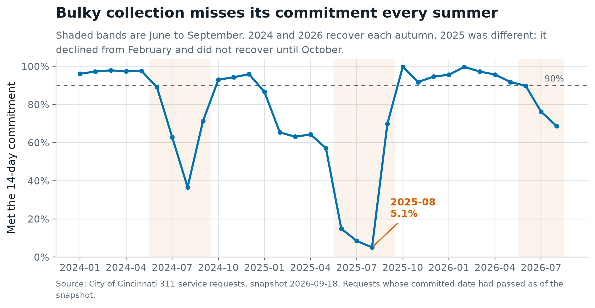
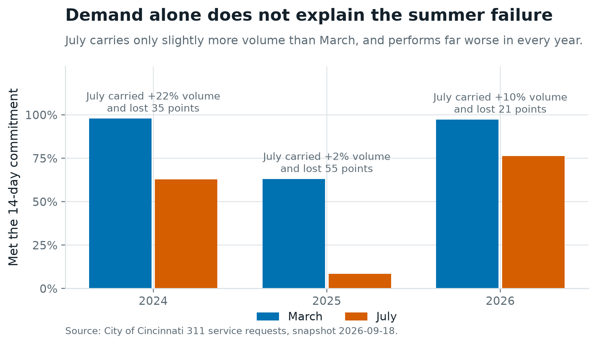
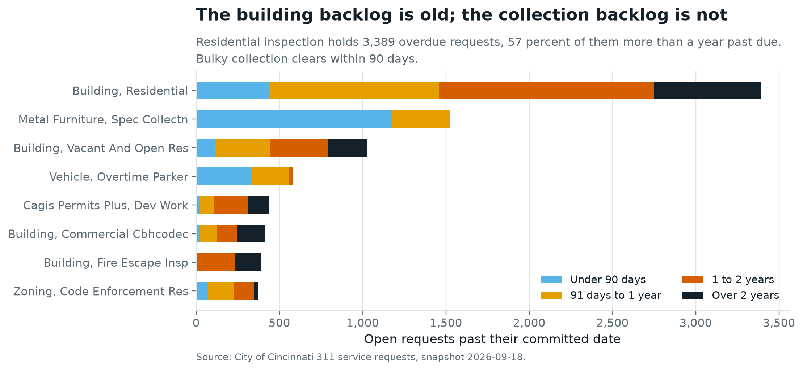

Executive takeaway
Bulky-waste collection misses its 14-day commitment in a concentrated, predictable window every year. In 2024, 84 percent of the service's annual missed commitments fell in four months. The service runs at 95 to 99 percent for the rest of the year.
The gap is not demand: July 2026 carried only 10 percent more volume than March and lost 21 percentage points. Fund seasonal capacity for June to September; do not lengthen the commitment. Lengthening it has already been tried, during the off-season, and demonstrated nothing.
The decision this answers
Cincinnati publishes a completion commitment with every 311 service request. Some services meet it and some do not. The question for an operations lead is where to add capacity, and where to instead reset a commitment the city is not meeting.
Two candidates emerged from the data. They need opposite responses.
| Bulky collection | Residential building inspection | |
|---|---|---|
| Volume | 117,670 requests, 22.7% of all intake | 16,782 requests |
| Commitment | 14 days | 365 days |
| Failure pattern | Sharp, seasonal, recovers each autumn | Persistent, accumulating, does not recover |
| Overdue open cases | 1,520, median 68 days past due | 3,444, median 426 days past due |
| Response | Add capacity | Triage the backlog first |
The data, and what it cannot tell you
Every non-emergency service request created between 1 January 2023 and 31 August 2026, pulled from the City of Cincinnati open data portal: 517,287 records across 70 fields, snapshotted on 28 September 2026 with its filter, row count and file hash recorded so any figure here can be traced to a specific extract.
Three things the dataset does not contain, stated up front because they bound every conclusion below:
- It records reports, not incidents. Request volume reflects what residents choose to report and through which channel.
- Response timeliness cannot be measured at all. The field recording when work actually began is blank on 97.8 percent of rows, so only completion timeliness is reported.
- Closure codes are undefined. The city publishes no value list for request status, so some closures are treated as completed service on an assumption. That assumption is tested rather than buried; see limitations.
What validation changed
Three findings I had already drawn were wrong, and integrity checks caught each one. They are listed here because they are the reason to believe the rest.
The published field definition contradicts the data
The city's data dictionary states the completion clock starts when work begins. The data starts it at submission, on 517,214 of 517,214 testable rows, without exception. The observed behaviour is used throughout and the conflict is documented rather than resolved silently.
One service code carries four different names
Service descriptions are not a stable identity: 695 code-and-description pairs exist across only 524 codes, and 63 percent of all requests sit under a code carrying more than one concurrent description. An earlier reading of the data showed a new service type absorbing volume from an old one. It was the same code relabelled. Grouping moved to the code.
A whitespace difference hid 29 percent of a service
Litter on private property appears as both LITTER, PRIVATE PROPERTY
and LITTER, PRIVATE PROPERTY. The difference is one
space. Matching on the text dropped 4,598 of 15,824 requests from that service.
The censoring trap. A request counted as on time the moment it closes, even with its deadline still in the future, admits only the fast closers from a recent cohort. Uncorrected, residential inspection read 100 percent on time for 2026 because none of its 2026 requests is due until 2027. Every trend here is restricted to requests whose committed date had actually passed.
Findings
1. The failure is seasonal, and it repeats

2. Demand does not explain it
Holding the service constant and comparing March with July in each year:

3. Summer demand is growing faster than the trough
| Year | Jan–Feb | Jun–Aug | Summer lift |
|---|---|---|---|
| 2024 | 2,232 | 2,874 | +29% |
| 2025 | 2,066 | 3,060 | +48% |
| 2026 | 2,188 | 3,532 | +61% |
A capacity plan built on the 2024 seasonal profile will be undersized by 2027.
4. A different problem: an old backlog in one department

5. Services with an unchanged commitment mostly improved
![Line chart of the on-time rate from 2023 to 2026 for the four Cincinnati 311 services whose committed completion time did not change during the period. Pothole repair, on a 12-day commitment, stays between 91 and 96.6 percent. Litter on private property and tall grass and weeds, both on 45 days, rise from the low 80s and mid 70s to the low 90s. Residential building inspection, on 365 days, rises from 44.8 percent in 2023 to 64.1 in 2024 then falls to 58.7 in 2025, and has no 2026 point because no request created in 2026 has reached its committed date.](assets/charts/05-stable-service-trend.png)
What I ruled out
Two things look like problems in the data and are not. Recommending action on either would spend effort on a difference that does not reach residents.
Neighbourhood variation in pothole repair
On-time rates run 85.7 to 97.6 percent across 42 neighbourhoods, with a median repair time of two to three days everywhere. The spread is statistically detectable at these volumes and operationally trivial. The comparison holds service mix constant by restricting to a single service: comparing neighbourhoods across a mixed basket would confound what a neighbourhood reports with how fast it is handled, which is the easiest way to turn an operational finding into an unfounded claim about fairness.
Web self-service as a source of duplicate requests
Internet intake is 65.2 percent of volume with a 13.7 percent duplicate rate. The 311 call centre is 22.2 percent of volume with 14.4 percent, slightly higher. The channel is not the cause. Duplicates concentrate in property-condition services, from 15.0 percent for litter to 19.7 percent for tall grass, consistent with several residents reporting the same visible problem.
An outside explanation for 2025
A publicly reported figure attributed a reduction in illegal dumping to a local programme. It was self-reported by the programme's operator with no stated methodology, and the timing did not fit: the decline began before the programme's season opened and the recovery came while it was still running. It is not used.
Recommendation and trade-offs
Add seasonal bulky-collection capacity, June to September
Target: restore July and August performance to the same year's spring baseline. In 2026, spring ran at 94.9 percent and summer at 72.5 percent. Closing that 22.4-point gap would have delivered roughly 1,568 additional requests on time across those two months.
Trade-off, stated plainly: the mechanism is not identified. Volume is insufficient to explain the drop, and the likely causes, crew availability during leave season, competing yard-waste and mowing work, heavier summer item mix, vehicle availability, all require operational data the city holds and this dataset does not. Run that diagnostic before committing recurring spend. If the constraint is competing workload rather than crew hours, the answer may be schedule sequencing at materially lower cost.
No cost estimate appears here. Crew hours, tonnage per run and overtime rates belong to the department. This analysis establishes the size and timing of the gap, not the price of closing it.
Do not lengthen the 14-day commitment
A 30-day commitment replaced it from roughly September 2025 to March 2026, then reverted. It was in force only during the months when the service is naturally fast: median collection times inside that window were 12, 6, 5, 5 and 4 days, all of which would have met the original commitment.
The 30-day requests show a 96 percent on-time rate against 42 percent for 14-day requests in the same year. That comparison is confounded and should not be used. The tier and the season are entangled. Lengthening the promise would raise the reported rate without changing when a resident's furniture is collected.
Triage the building inspection backlog before discussing capacity
1,963 cases more than a year past a 365-day commitment are not a queue. A case review establishing which represent live work and which are records that were never closed out has to come first, and that distinction cannot be made from this dataset.
How to tell whether it worked
Primary measure: the July and August on-time rate against the same year's March to May baseline.
Why not year on year: the service improved substantially between 2025 and 2026 for reasons unrelated to any intervention. Comparing 2027 summer against 2026 summer would credit the intervention with whatever that underlying trend continues to deliver. Using the same year's spring as the reference holds crew, fleet and process broadly constant and isolates the seasonal gap.
What this design cannot do: a before-and-after comparison cannot establish causation. Weather, staffing and demand all move these numbers independently. For evidence of effect rather than association, stagger the intervention across collection districts so the districts receiving it first can be compared with those receiving it later. That is a decision to make before implementation, not after.
Limitations
- The mechanism behind the summer failure is not identified. Volume is insufficient; the rest requires data the city holds.
- No costs are estimated or assumed.
- Closure codes are undefined by the publisher. Treating them as completed service yields a citywide on-time rate of 72.5 percent. Under the alternative reading that they represent no service delivered, it falls to 61.2 percent. The headline should be read as a range.
- Trend reporting covers 14.2 percent of volume. Only four services held a stable commitment; elsewhere a trend would mix a moving promise into a performance measure.
- 2026 is a partial year, January to August. Long-commitment services have no mature 2026 cohort at all.
- Two neighbourhood fields disagree on 23.3 percent of records. The documented field is used; the undocumented one is never mixed in.
- One city, one window, no causal claims.
How it was built
Python and SQL throughout, with DuckDB as the engine. The pipeline runs in sequence from a single command each: acquire, validate, define, model, analyse, chart.
- Immutable snapshot. The raw extract is never edited. Each pull writes a manifest recording the dataset id, the exact filter, the pull timestamp, the row count and a SHA-256 hash.
- Definitions locked before any number was produced. A written metric dictionary fixes the populations, the denominators and the exclusion rules. The executable version is the same file the model and the analysis both import, so one definition cannot drift into three.
- A tested dimensional model. A star schema at one row per request, with a role-playing date dimension joined as created, due and closed. Twenty tests run on every build and a failure stops it: grain, referential integrity, key uniqueness, fan-out, and a reconciliation proving the model reproduces the pre-model on-time rate to two decimal places.
- Exhaustive classification. All 517,287 records fall into exactly one of seven outcome buckets, and the buckets are summed and reconciled to the manifest on every run.
- Rates are never stored. The model holds additive counts and divides after filtering, so a filtered total cannot produce an average of percentages.
Code, metric dictionary, validation log and analysis tables on GitHub